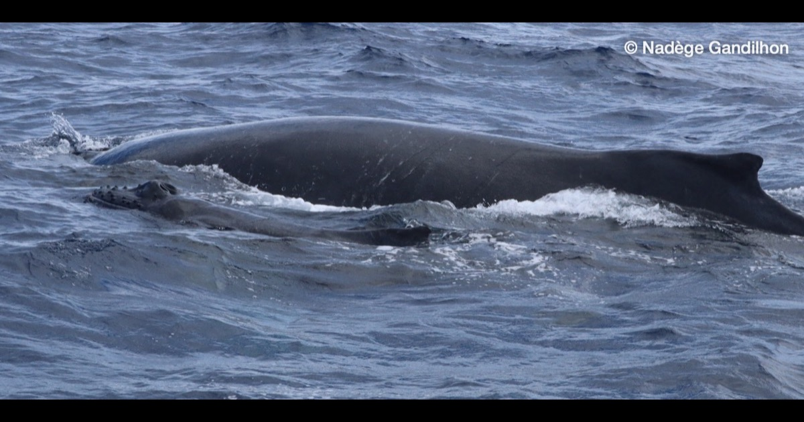

Blog
2026
Conference at the Saint Gilles Nautical Base, Reunion
On Friday 21 August, ABYSS held an evening of public talks at the Saint-Gilles Nautical Base, which OCEAN EARS attended.
Read →

Mother and calf sighting Reunion
The first humpback whale sighting of the mission, a mother and calf, seen from the Lady La Fee with the ABYSS team. Photos by Nadège Gandilhon.
Read →
Mission 1 Réunion
From 14 to 23 August 2026 OCEAN EARS visited Réunion to exchange knowledge about whale bioacoustics and conduct ocean audio field recordings with the fantastic Abyss team.
Read →